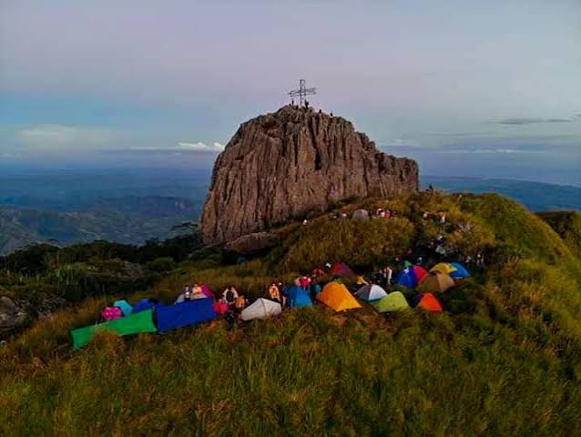

MT.NAPULAK
The most prominent and iconic peak in the municipality, famous for the large nipple-shaped limestone rock formation at its summit.The most prominent and iconic peak in the municipality, famous for the large nipple-shaped limestone rock formation at its summit.